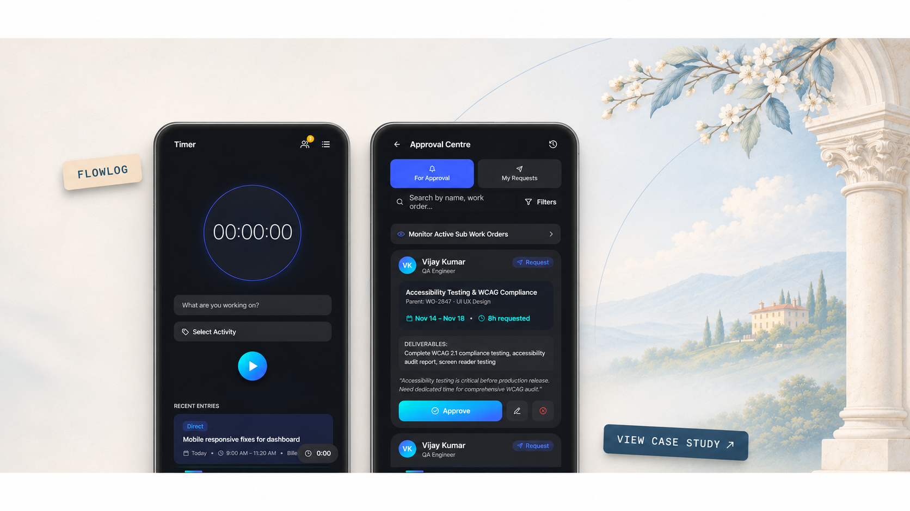
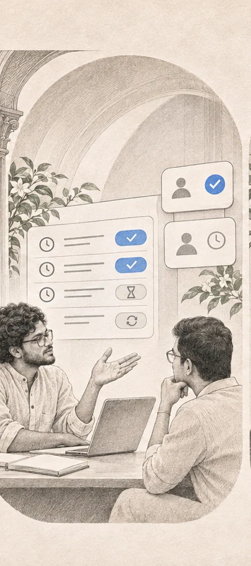

01 / HUMAN WORKFLOW
Work begins with a request
A contributor might receive delegated work or ask another Work Owner to assign it. Before FlowLog, that request could happen over a phone call without a recorded trail.
Recording how long someone worked is only part of understanding their contribution.
The organisation already had a time-tracking feature in its VPN-connected web portal. My initial brief was to design a standalone mobile experience that made logging time more accessible.
But while exploring how employees selected work to track, I identified another gap: contributors sometimes requested work from another Work Owner through a phone call, leaving no digital record of how that delegated work began.
I proposed extending the mobile experience beyond time capture to connect requests, assignments, recorded hours, optional evidence and completion reviews.
CORE DESIGN CHALLENGE
How might we make daily time tracking convenient while keeping delegated work accountable, without introducing unnecessary reporting effort?

Manager, colleagues, Managing Director and internal development team
Mobile UX/UI, work-delegation flows, time mapping, supporting screens and AI-assisted prototype handoff
I worked on the mobile product experience from workflow exploration through interface design and prototype handoff. I discussed the proposed capability with colleagues, designed the screens and interaction states, reviewed a working prototype with my manager and four colleagues, and refined the experience based on feedback.
I used Figma Make and AI-assisted prototyping to create a React-based frontend for handoff. The internal development team implemented the released application.
A time entry becomes more meaningful when it can be connected to the work that was requested, performed and reviewed.
A contributor might receive delegated work or ask another Work Owner to assign it. Before FlowLog, that request could happen over a phone call without a recorded trail.

Employees need to record time against the relevant Work Order, Sub Work Order or general activity rather than saving disconnected hours.

The person performing the work and the person responsible for it need a shared understanding of scope, recorded time and supporting evidence.

Logging time does not automatically mean the assignment is complete. The contributor requests closure, and the Work Owner reviews the work before making a decision.
These illustrations are conceptual storytelling assets, not representations of actual research sessions or product screenshots.
The original requirement was straightforward: make an existing web-based time tracker available through a standalone mobile application. But exploring the complete task revealed that employees needed more than an accessible timer.
Sub Work Orders were already part of the organisation's working model. Work Owners could assign delegated work, but contributors sometimes contacted another owner by phone to request an assignment. That conversation was not necessarily recorded within the system.
I held an internal group discussion with 20 colleagues about recording delegated-work requests. 18 of 20 colleagues considered the capability a must-have. The remaining two considered it a could-have. This supported my recommendation to include registered requests in the mobile application.
This was discovery input for prioritisation, not independent usability testing or evidence of improved performance.
Work Owner: Owns the parent Work Order, assigns or reviews delegated work, monitors time and evidence, and reviews completion requests.
Contributor / Delegate: Receives or requests scoped work, records time, optionally submits evidence and requests closure when the overall work is ready.
The key UX problem: The product needed to connect two different moments: recording activity and being accountable for assigned work. A timer alone could solve the first problem. It could not explain how work was requested, who owned it, what evidence was available or who needed to act next.
Parent Work Order → Sub Work Order → Time entries → Optional evidence → Owner review → Closure
Each decision is grounded in the original FlowLog interface exports, with the problem, design response, UX reasoning and trade-off made explicit.
THE PROBLEM
An owner could assign work directly, but a contributor requesting work from another owner depended on a conversation that might not be recorded.
This created a gap between the work someone agreed to perform and the time they later logged against it.
WHAT I DESIGNED
I designed two routes that converge on the same Sub Work Order structure.
Route A — Owner-led assignment
The Work Owner selects a contributor and defines the assigned work, allocated hours, dates and expected deliverables.
Route B — Contributor-led request
The contributor finds another owner's Work Order, describes the proposed work, estimates hours, specifies dates and deliverables, and submits a registered request for approval.
The owner can then review the request instead of relying entirely on a verbal agreement.
THE UX REASONING
Both people have different starting points, but they should share one recorded understanding of the work.
Supporting both routes makes the workflow flexible without creating separate systems for tracking the resulting assignment.
THE TRADE-OFF
Adding request management increases product scope and introduces review steps.
I recommended it because a recorded request could improve traceability. However, reducing phone calls or disputes was a design rationale, not a measured result.
Different entry points should converge into one understandable work record.
THE PROBLEM
Employees could spend time on parent Work Orders, delegated Sub Work Orders or general activities such as meetings and breaks.
A mobile timer needed to distinguish those contexts while remaining convenient during the working day.
WHAT I DESIGNED
I provided three ways to map recorded time:
01 — Work Order
For activity associated with a parent Work Order.
02 — Sub Work Order
For time spent on an assigned or requested contribution.
03 — General / non-billable activity
For activities that should be recorded without associating them with a Work Order.
I also designed a retractable timer that could remain accessible while users navigated between modules.
THE UX REASONING
A time entry needs more information than its duration. The work context gives meaning to the hours recorded and helps distinguish different types of activity.
The persistent timer aimed to let users move through the application without losing access to the active session.
THE TRADE-OFF
Asking users to choose a context adds an interaction, but omitting it would make recorded hours less informative.
The appropriate balance between context selection and logging speed was not independently tested.
Make time easy to record without losing the information that explains what it belongs to.
THE PROBLEM
Not every hour of work produces a document or file.
Requiring employees to upload evidence with every time entry could introduce unnecessary reporting and encourage micromanagement.
Yet Work Owners still needed enough information to review the completed assignment.
WHAT I DESIGNED
I separated two actions.
Time-only entry
A contributor can record time against a Sub Work Order without attaching a deliverable.
Time entry with evidence
When needed, a contributor can attach files and notes to an individual entry.
The overall Sub Work Order can carry the relevant deliverables when the contributor requests completion review.
THE UX REASONING
Logging time and proving that an assignment is complete are related but different tasks.
Making evidence optional during routine entries helps avoid turning every work session into a formal submission.
At closure, the owner can consider the overall work trail and submitted deliverables.
THE TRADE-OFF
Optional evidence reduces repeated submission effort, but it makes the final review more dependent on the overall work record.
Whether that approach works equally well for different types of work requires further validation.
Ask for the amount of evidence appropriate to the decision being made.
THE PROBLEM
Completing a time entry doesn't close a Sub Work Order.
Contributors need to know the assignment's scope and current state. Work Owners need to inspect the submitted work and decide whether it can be closed.
Without distinct views, it can be unclear whether an action is waiting on the contributor or the owner.
WHAT I DESIGNED
I connected several role-specific views.
For contributors
The Sub Work Order detail presents scope, allocated hours, used hours, remaining time and relevant work information.
Contributors can review their progress, request closure and follow the status of requests they have raised.
For Work Owners
The owner can inspect the delegated assignment, associated time entries and submitted deliverables.
Incoming requests and completion-related review items appear in the approval experience, where the owner can take the relevant action.
THE UX REASONING
Outgoing requests and incoming reviews answer different questions:
Keeping those responsibilities distinct helps communicate the next action without losing the connection to the same underlying work.
THE TRADE-OFF
Role-specific views introduce more states to design and maintain, but they make responsibility clearer than a single undifferentiated list.
Show people what needs their attention, while preserving the context behind the request.
A guided prototype review resulted in a concrete supporting-screen revision. It was not an independent usability test.
THE INITIAL DESIGN
The calendar showed meetings, but did not provide the level of detail reviewers wanted.
THE FEEDBACK
My manager and four colleagues participated in a guided prototype review. I introduced the tasks and explained features when questions arose. Their feedback identified a need to inspect meeting timing and participant information.
WHAT I CHANGED
I added a meeting-detail experience that exposed timing and participants using information from connected Google Calendar and Microsoft Teams services.
Feedback influenced a concrete supporting-screen design decision. However, the review was guided, not an independent usability test, and I do not have a verified earlier frame for a reliable visual before-and-after comparison.
The four decisions explain the core workflows. The optional explorer preserves all 23 FlowLog screen entries, with filters, previous/next navigation and image zoom.
FEATURED GUIDED JOURNEY · 8 KEY SCREENS
Follow one contribution through the product, from starting the timer to the owner’s review. The final step shows the documented calendar refinement.

SCREEN 01 / 08
The timer is available from the dashboard, giving employees a mobile starting point for recording their work.
For additional product screens, explore the full original-screen library below. The walkthrough above is the recommended recruiter path.
23 existing FlowLog screen entries: 19 original SVGs and 4 separate WebP exports. Filter by product area or use Previous / Next.
I designed the mobile time-tracking experience and proposed connecting it to recorded delegated-work requests. The internal engineering team implemented the published application.
WHAT I CONTRIBUTED
My contributions included two delegation routes, time-to-work mapping, optional evidence, contributor and owner views, completion review, supporting product screens and iterative refinements.
I used Figma Make and AI-assisted prototyping to make the design tangible for review and developer handoff.
WHAT I CAN VERIFY
Discovery: A discussion with 20 colleagues helped prioritise recorded Sub Work Order requests. Eighteen considered the capability a must-have.
Design and review: Approximately two weeks in October 2025. A guided review with my manager and four colleagues informed revisions, including meeting timing and participant details.
Handoff and delivery: After manager review and MD approval, I handed over the prototype and generated frontend files, explained the workflow and supported development handoff. The internal engineering team implemented the application over approximately two months; it was released via the Play Store for internal organisational use.
WHAT I CANNOT CLAIM
There are no verified post-launch measurements of adoption, active usage, time saved, fewer phone calls, task completion, error rates, employee satisfaction or productivity gains.
The guided prototype review informed the design but did not establish that people could complete the workflows independently.
WHAT I WOULD VALIDATE NEXT
I would assess whether a contributor can request a Sub Work Order, record time and request closure without guidance, and whether a Work Owner can locate and review the relevant request and work history.
This is a proposed next step, not research already performed.
WHAT THIS PROJECT TAUGHT ME
The initial brief was to design a timer. The broader challenge involved connecting who requested the work, who performed it, what time was recorded and who needed to make the final decision.
AI-assisted prototyping helped communicate the solution, but the essential product-design work was defining the responsibilities, interactions and states that needed to exist.
FlowLog strengthened how I approach mobile product design: the most useful interface isn't always the one that records an action, but the one that makes the work around that action understandable.